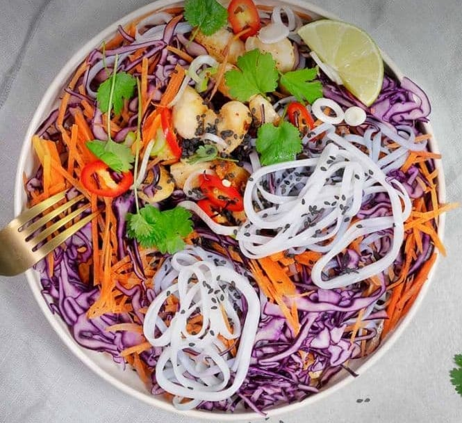

Chicken with rice-noodles

Description
asian style chicken pot meal with rice noodles, vegetables and delicious soy-tahini sauce
ingredients for 4 Portions
500 g. chicken breast
2 table spoons of olive oil
400 g. red cabbage
400 g. carrots
200 g. Reice-noodles
4 Table spoons of Soy sauce
3 Table spoons of Water
2 Table spoons of Tahini
1 Table spoon of chopped ginger
2 Cloves of garlic
30 g. of coriander
1 tea spoon of Chilli flakes
1 tea spoon of Salt
4 Table spoons of spring onions
2 Table spoons of sesame seeds
Steps
Cut chicken breasts in small pieces
add some olive oil to a pan and fry chicken on medium heat until golden
add garlic, ginger, chilli flakes and salt
cut a cabbage into strips and grate carrots
Cook noodles and put them into a cold water after
mix soy sauce with tahini and water to form a homogeneous Dressing
mix noodles with carrots, cabbage and fried chicken
serve with the dressing and coriander
go back